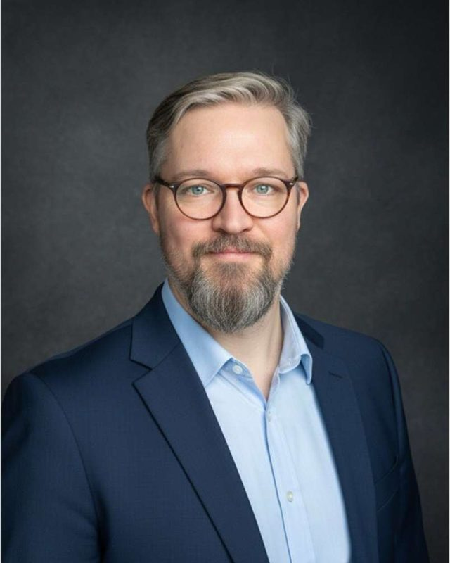

About

I studied medicine at Sechenov University in Moscow, trained as a psychiatrist at the Moscow Research Institute of Psychiatry, and went straight from residency into clinical research. I started at Quintiles as a clinical research associate, visiting sites in psychiatry, neurology, gastroenterology, hepatology, immunology and oncology trials. Since then I have worked on both sides of drug development: as a sponsor at AbbVie, Alexion and Miltenyi Biomedicine, and at the CROs IQVIA and Smooth Drug Development.
Medicine taught me to read a protocol the way investigators and patients will live it. Project management taught me to turn it into a plan with owners, budgets and early warnings. My best work happens where the two meet: tracing distorted safety labs back to how samples were handled before they cost a study its data and its budget, or rebuilding a patient’s journey so a rare disease study can enrol.
I hold PMP and PRINCE2 Agile certifications and I am completing a part-time Pharma MBA at Goethe Business School in Frankfurt. Outside my day job I write MadPharma, about the drug-safety failures behind today’s regulations, and I study how people and AI systems make decisions together.
I live in Düsseldorf and I am open to new roles in clinical development and medical leadership.
How I work
- Clinical judgement in the protocol
- Eligibility, protocol burden, diagnostic pathways and lab-data integrity: the levers behind screen-failure rates and data quality.
- Running global trials
- I lead the operational, financial and data side of multi-country trials, from start-up to database lock.
- Quality and regulation
- Risk-based quality management under ICH E6(R3) and E8(R1), submissions under the EU Clinical Trials Regulation in CTIS, inspection-ready trial master files.
- Sponsors, CROs and vendors
- I have been the CRO’s lead for the sponsor and the sponsor overseeing the CRO, and I negotiate contracts and budgets from both seats.
- Early warnings
- I build forecasts and dashboards that show a problem while it is still cheap to fix.
Education and credentials
- Medicine
- MD, Sechenov Moscow Medical University (2004–2010). Clinical residency in psychiatry, Moscow Research Institute of Psychiatry (2010–2012).
- Business
- Pharma MBA (in progress), Goethe Business School, Goethe University Frankfurt (2025–2027)
- Project management
- Project Management Professional (PMP), PRINCE2 Agile Practitioner
- Clinical research
- Design and Interpretation of Clinical Trials
- Data
- Google Data Analytics Professional Certificate, data analytics in R, Tableau
- Languages
- English (full professional), Russian (native), German (B1, Goethe-Zertifikat)